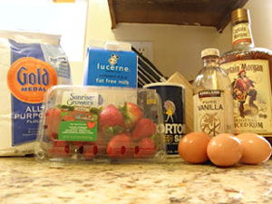
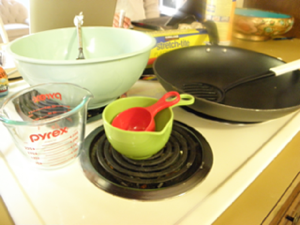
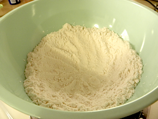
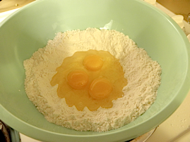
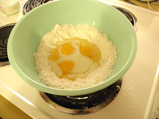
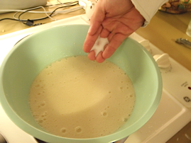
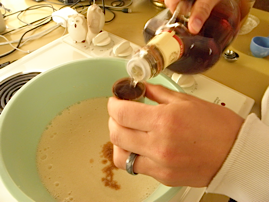
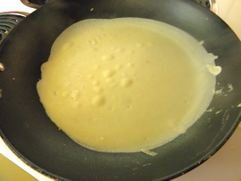
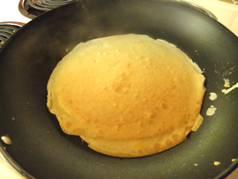
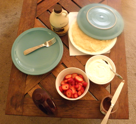

8-26-2012
Authentic Southern French Crepe
Bojour! About a month ago our family hosted a young man named Jules from Nantes, France. In his home town he lived above a creperie and as a thank you he cooked and shared with us this recipe for French Crepes. This recipe is definitely an indulgence, but even the healthiest of us need those every now and then. Whether you prefer to add sweet fillings, my favorite being fresh strawberries and whipped cream, or savory fillings, such as smoked salmon and feta cheese, this is a delicious recipe for Sunday Brunch or any day of the week. Bon Appetit!
Note: This recipe makes roughly 10 - 12 crepes.
Ingredients:
- 1 1/4 cup Flour
- 3 Eggs
- 2 cups Milk
- Pinch of Salt
- 1 capful of Vanilla Extract
- Butter (for rubbing on skillet)
- Optional: 1 capful of Rum
Supplies:
- Medium Bowl
- Dry Measuring Cups
- Liquid Measuring Cup
- Whisk
- Plastic Wrap
- Skillet
- Spatula
Directions:
- Measure out the flour and place into a medium bowl. Use your hands to make a large crater in the center of the flour. 
- Crack the 3 eggs into the center of the flour crater. Next, add only a little bit of milk to the eggs in the center of the flour crater. 
- Using your whisk pop the egg yolks. Start by mixing just the center contents of the crater. As that starts to thicken, add a little more milk and flour from the sides of the crater and continue to whisk. Continue adding milk and taking flour from the sides of the crater until all of the milk and flour is throughly whisked in. Be forewarned that this will be a whisking frenzy! 
- Once you've finished whisking the flour/egg/milk mixture add a pinch of salt, capful of vanilla, and, if you choose, capful of rum. Whisk to fully combine these ingredients. 
- Cover your crepe batter with plastic wrap and stick in the fridge for a minimum of 30 minutes. This batter could be mixed the night before and stored in the fridge overnight.
- To cook your crepes, set your burner on a medium to medium-low temperature. Very lightly butter the skillet. Pour about a half a cup of batter into your skillet and swirl the skillet to get a thin even coat. Note: the first crepe always turns out badly.
- The edges of the crepe will start to lift slightly from the pan, at this point you should flip your crepe. You only need to briefly cook the second side of the crepe. Remove crepe from skillet and keep warm as you continue to make the rest of the crepes. 
Enjoy your crepes with an assortment of delicious fillings. We choose to have a very indulgent brunch and had strawberries, whipped cream, nutella, chocolate sauce, and maple syrup.
I hope that you enjoy this recipe as much as my family does! Like me on FaceBook and tell me what your favorite fillings and toppings are!
Click here for more great recipes!